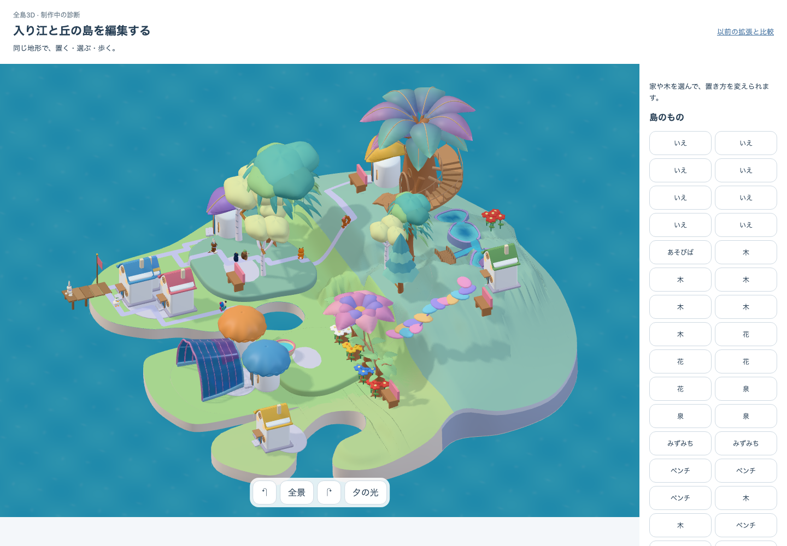
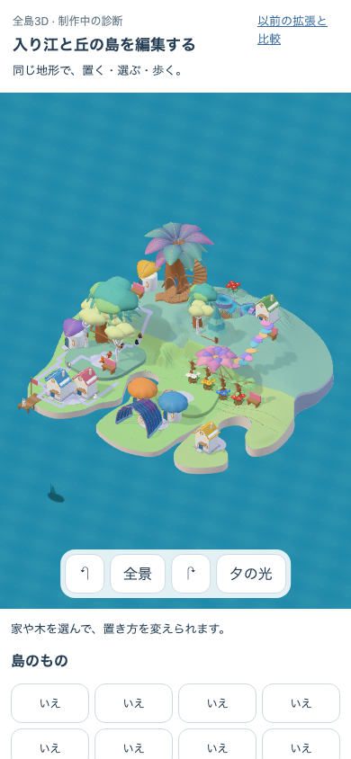

細部より、全島を先につなぐ
保存済みの森と大樹の階段を、同じ本体rendererへ接続した粗い候補。全体では中央の余白と地区の分断が目立つ。住人の道を塞ぐ階段入口を先に直す。
DEV /prototypes/place-qa/authored.html?art=whole · build authored-whole-c5 · native05-whole-rough-v1 · production native=false
美術 HOLD／独立理解・安全 N=0／runtime PARTIAL（core PASS、入口で22所有物への通行が切れる）。範囲と検証結果
 採用した完成像。独立した美術原本。
採用した完成像。独立した美術原本。 同じ本体rendererの全景。森林4所有物・回廊1。
同じ本体rendererの全景。森林4所有物・回廊1。
実画面を回転。局所の完成より、場所のつながりを確認する。
390×844。全島は収まるが、場所と入口の読みやすさは未完成。